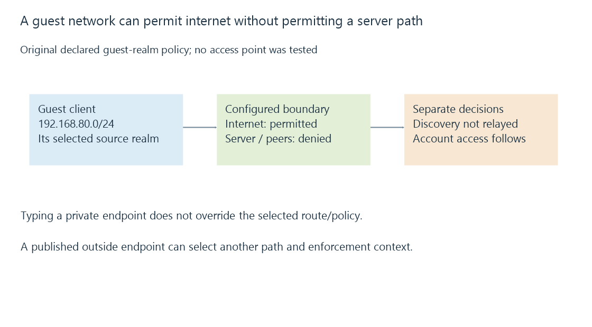

Guest network isolation and permitted paths
Guest isolation applies a network’s chosen policy to guest clients and destinations, allowing internet access without necessarily permitting local media-server or discovery paths.
A guest phone can browse the internet while being unable to reach the home’s Emby server. Internet access and access to another local device are separately permitted paths.
Guest network isolation describes the policies that separate guest clients from selected peers or other network realms.
A guest label does not specify every rule
Use this original reduced policy:
{
"guestRealm": "192.168.80.0/24",
"serverRealm": "192.168.50.0/24",
"internetAllowed": true,
"serverRealmAllowed": false,
"guestPeerAllowed": false,
"localDiscoveryRelayed": false
}
The four flags describe this teaching arrangement. A product’s actual guest mode can implement another combination.

A DHCP lease and valid default route can therefore coexist with a denied server connection.
Peer isolation and inter-network policy are different boundaries
Client isolation can restrict communication between stations on a wireless network. Routing/firewall policy controls traffic between different network realms.
A guest SSID can use its own VLAN and routed boundary, or another supported arrangement. Merely naming it “guest” does not reveal that topology.
Likewise, a shared wireless name does not prove that two devices have an unfiltered layer-two path.
Discovery can be filtered independently
A broadcast/multicast discovery exchange can be absent while a permitted manual unicast connection works.
In the declared policy, discovery is not relayed and the server realm is denied. Typing the server’s private address cannot override either network rule.
A configured exception for one server service can instead make manual access possible while keeping peer traffic and discovery restricted.
A public server endpoint can select another path
A guest client might use a public-facing hostname rather than the private server address. Gateway loopback/translation and the policy’s enforcement point then determine the resulting path.
A rule before destination translation and a rule on the final inside destination can see different endpoint context. Intentional publication of a service can also permit a path that direct LAN access does not.
Port forwarding and NAT loopback identify those stages.
Network reach and account access remain independent
A guest device reaching the Emby listener still needs the intended authentication and media permissions. A permitted network exception is not permission to administer the server.
See Also
- VLANs, tagged links and routed policy
- Firewalls, traffic rules and connection state
- Emby server discovery and advertised endpoints
- How a home media network carries an Emby stream